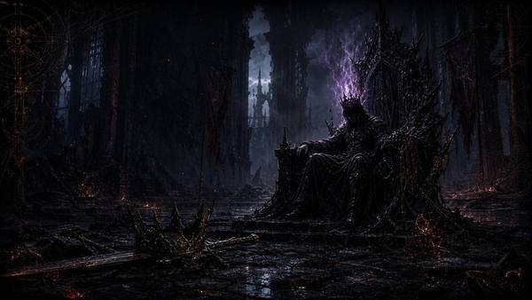
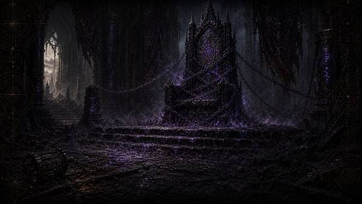
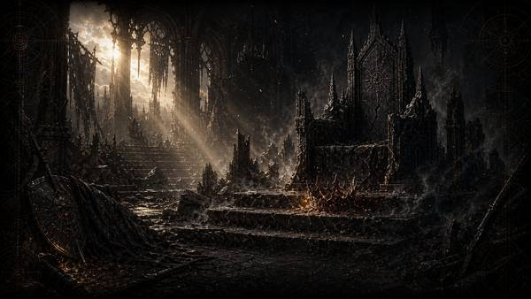
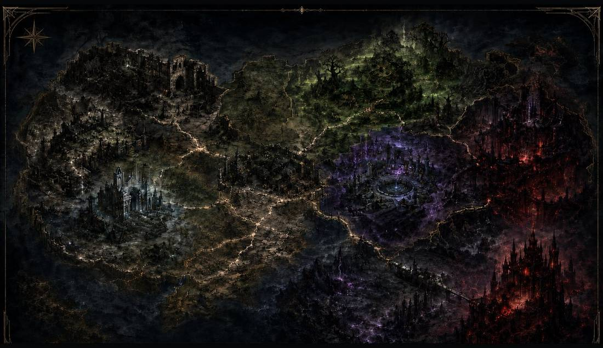
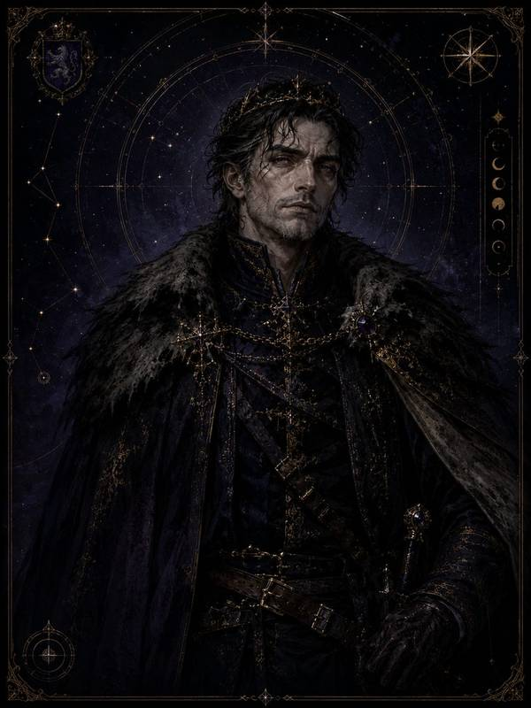
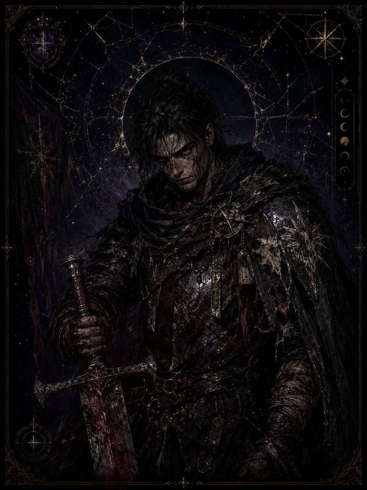
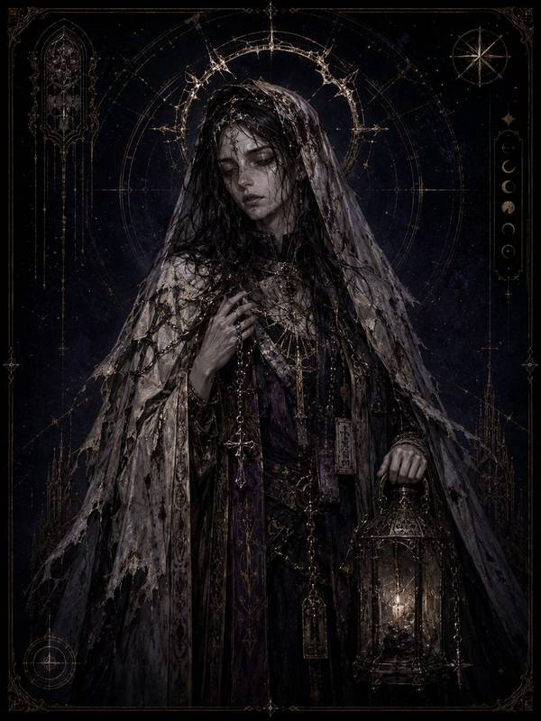

단순 생존이 아니라, 생존의 방식이 남는 게임
목표는 살아남는 것 자체가 아닙니다. 반복된 선택이 인격 스탯으로 누적되고, 그 누적이 마지막에 엔딩 자격으로 되돌아오는 구조를 만드는 것이었습니다.
2026년 1월 2인 체제로 착수한 신작을 5월에 단독으로 인수해 기획 · 데이터 구조를 정리했고, 남은 기획 의도를 카드 기반 생존 게임의 방향으로 재구성해 FireVow: DarkFantasy로 발전시켰습니다.
기획 · 시스템 · 데이터 · 밸런스 · 시나리오 · UI 흐름은 직접 설계했고, 클라이언트 구현 · 아트워크 · 사운드는 AI를 활용하되 게임의 방향에 맞게 선별하고 디렉션했습니다. 담당하지 않은 영역은 이 문서에서도 그렇게 표기합니다.
최종 질문은 마왕 토벌이 아닙니다. “빈 왕좌를 비워둘 수 있는가”를 끝에 두고, 거절의 자격을 끝까지 살아온 선택에 연결했습니다.
핵심 생존 루프
안전한 행동을 고르는 게임이 아니라, 시간과 위험을 읽고 다음 결정을 감당하는 게임으로 설계했습니다.
시간
모든 행동은 다음 위험까지 남은 시간을 줄입니다.
자원
획득보다 무게 · 부패 · 내구와 사용 순서가 중요합니다.
대가
안전한 선택도 인격과 서사의 비용을 남길 수 있습니다.
지역 진입
중심 거점에서 서쪽 피난처 또는 동쪽 오염 지대로
탐험
드랍 규칙과 조우율로 자원 또는 위험 발생
행위 대상
수원 · 폐허 · 광해 덩어리 · 동지 · 랜드마크 확보
레시피 처리
도구 내구도 · 시간 · 부산물 · 실패 리스크 관리
생존권 확장
불빛 · 음식 · 회복 · 장비로 다음 지역 진입
세 개의 설계 기둥
시스템 · 밸런스 · 시나리오 · 인격이 각각 다른 답을 내지 않도록, 세 기둥을 먼저 고정하고 나머지를 그 아래에 배치했습니다.
데이터 기반 생존 루프
카드 · 맵 · 드랍 · 레시피 · 전투 · 엔딩이 13개 데이터 테이블의 참조 구조로 이어지고, 기획 데이터가 그대로 실제 제작 단위가 됩니다.
선택의 대가
같은 대륙에서도 나눔 · 외면 · 약탈 같은 판단이 인격 스탯과 이후 선택 자격으로 누적됩니다.
빈 왕좌의 서사
마왕 토벌보다 “빈 왕좌를 비워둘 수 있는가”를 최종 질문으로 두고, 거절의 자격을 끝까지 살아온 선택에 연결합니다.
- 시스템
- 세계의 실물을 카드로 통일
- 밸런스
- 행동을 시간 · 생존 비용으로 환산
- 시나리오
- 성장 서사를 버리고 마모와 보존을 기록
- 인격
- “어떻게 살았는가”를 엔딩 자격으로 전환
카드가 세계의 실물을 대표한다
카드가 세계의 실물을 대표하고, 테이블이 그 카드의 행위 가능성과 결과를 결정합니다. 13개 테이블 → ScriptableObject → 런타임 관리자의 경계를 고정해, 기획 데이터가 실제 플레이까지 도달하는 경로를 추적할 수 있게 했습니다.
Excel Table × 13
카드 · 맵 · 드랍 · 레시피 · 전투 · 엔딩 정의
ScriptableObject
저작 데이터를 런타임 자산으로 변환하고 참조 보존
Manager Layer
Card · Map · Craft · Combat · Condition · Vitals
단일 정본
표시 문구와 행동 규칙이 서로 다른 파일에서 어긋나지 않게 연결합니다.
참조 검증
누락 ID와 도달 불가 콘텐츠를 빌드 전에 검사합니다.
플레이어 선택
드래그 · 조합 · 탐험 · 텍스트 선택 전투가 같은 카드 정본을 사용합니다.
| 필드 | 역할 |
|---|---|
ID | 고유 식별자와 타입 대역 |
NAME | 화면 표시명 |
TYPE | 지형 · 재료 · 음식 · 도구 · 장비 분류 |
ACTIONID | 클릭 · 상태 팝업의 단일 행동 |
GROUP | 레시피 입력 · 장비 슬롯 공용 분류 |
DURABILITY | 사용 횟수 · 착용 시간 · 부패 시간 |
RESULT | 상호작용 결과와 후속 카드 연결 |
OPTIONID | 획득 · 소지 · 장착 시 제공 옵션 |
표시 · 분류 · 행동 · 연결 역할을 한 정본에서 읽도록 두고, 세부 필드는 실제 제작 명세에서 별도로 관리합니다.
몸을 하나의 HP 막대로 두지 않았다
머리 · 상의 · 하의 · 신발 · 장갑의 다섯 부위로 나누고, 각 부위가 따로 다치고 곪고 썩게 했습니다. 치료 지연이 곧 다음 탐험의 제약이 됩니다.
부위별 타이머
피해를 받은 부위마다 상처가 독립적으로 남고, 치료가 늦을수록 다음 상태로 진행합니다.
치료 지연의 대가
상처를 방치하면 감염과 주기 피해 위험이 커져, 탐험을 계속할지 돌아갈지 선택하게 합니다.
회복 불가능한 손실
치명 단계에서는 최대 HP와 부위 기능이 훼손되어 남은 런의 운영을 바꿉니다.
붕대는 장비가 아니다
붕대는 장착 슬롯이 아니라 Heal 전용 치료 행동으로 상처에 직접 적용됩니다. 장비 슬롯 경쟁에서 치료를 분리해, 회복을 “무엇을 벗을 것인가”의 문제로 만들지 않았습니다.
전역 상태를 부활시키지 않는다
상처는 캐릭터 전체의 단일 플래그가 아니라 부위마다 독립 수명을 갖습니다. 한 번의 회복이 모든 부위를 되돌리지 못하게 해 누적 손실을 유지했습니다.
전투는 별도 씬이 아니라 조우의 한 갈래
전투는 TextCombat 노드 그래프에서 갈라집니다.
대화 · 회피 · 공략 · 공격이 같은 조우의 다른 진입로입니다.
NODE · 진입
몬스터 · NPC · 환경 문맥
SHOW · 조건
플래그 · 상태 · 자원으로 선택지 표시
COST · 비용
카드 · 내구 · 시간을 원자적으로 예약
ROLL · 판정
기본 확률과 조건 보정
RESULT · 결과
피해 · 상태 · 플래그 · 후속 노드
- 플레이어 타격
- 공격과 방어를 계산한 뒤 실제 피해만 반영
- 몬스터 타격
- 방어로 피해를 줄이되 최소 결과를 명시
- Roll 명중
- 기본 확률, 장착, 조건, 공포 보정을 한 판정에 결합
- 지성 조우
- 대화와 결렬, 전투 진입이 같은 그래프에서 이어짐
인격 스탯은 도덕 점수표가 아니다
반복해서 어떤 방식으로 살아남았는지의 기록입니다. 같은 대화에서도 무엇을 골랐는지가 이후 선택 자격을 가릅니다.
휴식과 잔혹함의 흔적
분노, 공포, 공격에 잠식될수록 내려가고 휴식과 성찰, 자비로운 선택으로 회복됩니다.
직면과 신중의 방향
위험에 맞서는가, 물러서는가를 기록합니다. 자연 감소 없이 누적된 선택의 방향을 남깁니다.
나눔과 약탈의 경계
누군가의 몫을 빼앗았는지, 나눴는지, 구조를 올리고 악을 식인으로 내렸는지를 기록합니다.
인격 스탯은 보상용 능력치가 아니라 엔딩의 거절 자격을 판정하는 서사 상태입니다. 플레이 방식과 결말을 분리하지 않습니다.
세 루트가 하나의 질문으로 모인다
왕 · 용사 · 성녀의 3개 서사 루트가 마왕 이후의 선택을 다르게 해석하지만, 최종 질문은 왕좌를 받아들일지 거절할지에 모입니다.



- 생존 실패
- HP · 허기 · 갈증 · 인간성 · 부위 상태가 런의 종결 조건과 연결됩니다.
- 왕좌 수락
- 마왕 토벌 뒤 권력을 받아들이는 기본 선택입니다.
- 왕좌 거절
- 인격 스탯과 실제 선택 이력이 거절 자격을 판정합니다.
기준은 하나, 운영은 셋
시작 능력치, 무게, 자원 여유가 달라 같은 규칙 위에서 서로 다른 운영을 요구합니다.
| 캐릭터 | HP / ATK / DEF | 무게 | 운영 해석 |
|---|---|---|---|
| 마지막 왕 오스릭 | 88 / 3 / 2 | 26 | 가장 단단한 시작. 시작 허기 약 9.5시간과 넓은 적재 여유로 초반 탐험을 준비합니다. |
| 깃발을 버린 용사 브란트 | 86 / 4 / 1 | 22 | 공격력이 높고 시작 인간성 약 1.1일치. 전투 후 인간성 회복을 운영에 포함합니다. |
| 기도를 거둔 성녀 세라핀 | 66 / 2 / 0 | 16 | 낮은 방어와 적재 여유 속에서 치유와 조우 선택의 효율이 중요합니다. |
체력 차이
허용되는 실수의 양과 회복 우선순위를 바꿉니다.
공격 · 방어
전투를 빨리 끝낼지 피해를 줄일지 선택이 달라집니다.
무게
탐험 거리와 귀환 시점, 제작 재료의 우선순위를 바꿉니다.
잠식 난이도 — 적 체력만 올리지 않는다
런 시작 전에 고르는 난도 사다리입니다. 출발 자원, 드랍, 상처, 사건 지속, 탐험 위험을 나눠 플레이어의 생존 계획 전체를 압박합니다.
시작 자원 감소
허기와 갈증의 초기 여유를 줄입니다.
보너스 드랍 감소
우연한 회복보다 계획된 제작을 요구합니다.
상처 확률 증가
전투와 탐험 실패의 장기 비용을 키웁니다.
주간 사건 연장
세계 상태의 위험이 더 오래 지속됩니다.
탐험 난도 상승
조우 결과와 자원 소모의 변동 폭을 넓힙니다.
변경과 그 너머
안전한 중심지에서 출발해 서부 황무지, 동부 오염 지대, 남부 전장과 마왕성으로 위험이 깊어지는 탐험 구조입니다.

- 중심 거점
- 제작과 회복, 다음 탐험의 준비가 이뤄지는 기준점
- 서부 황무지
- 기초 자원과 낮은 위험으로 생존 규칙을 학습
- 동부 오염
- 변이 · 잠식 · 희귀 자원이 함께 등장하는 고위험 구역
- 마왕성
- 15일의 준비와 인격 선택이 결말로 수렴하는 종착지
세 주인공
왕 · 용사 · 성녀는 같은 생존 규칙을 공유하지만, 무엇을 잃었고 무엇을 지키려는지가 선택과 결말의 해석을 바꿉니다. 캐릭터의 차이는 시작 능력치에만 있지 않습니다.



아트 · 사운드 디렉션
직접 제작한 영역이 아닙니다. 외부 리소스를 게임의 톤에 맞게 선별하고, 서로 다른 출처가 하나의 세계처럼 읽히도록 방향을 통일하는 역할을 맡았습니다.
Art Direction · 어둠이 무게를 만든다
- 세미 리얼 2D 페인팅과 흑색 · 갈색 기반
- 눌린 명암과 낮은 금속 질감으로 소모된 세계 표현
- 정적인 초상으로 상태와 서사를 전달
- 카드는 짧은 시간 안에 기능이 읽히도록 실루엣 우선
Sound Direction · 조용한 압박, 읽히는 신호
- 멜로디보다 공간감과 압박을 우선한 BGM
- 위험 · 조우 · 사망은 정보성이 강한 전용 효과음
- 영웅적 팡파르를 피하고 생존의 피로를 유지
- 상태 전환은 화면과 소리가 같은 순간에 알림
한계. 작은 팀에서도 일관된 인상을 만들 수 있다는 것이 장점이고, 외부 리소스의 원래 문맥과 품질 편차를 디렉션만으로 완전히 제거할 수는 없다는 것이 한계입니다.
살아남았는가가 아니라, 어떻게 살아남았는가.
“그 자리는 오래 비어 있었고, 오래 비어 있었다는 사실이 생존의 마지막 선택이 되었다.”